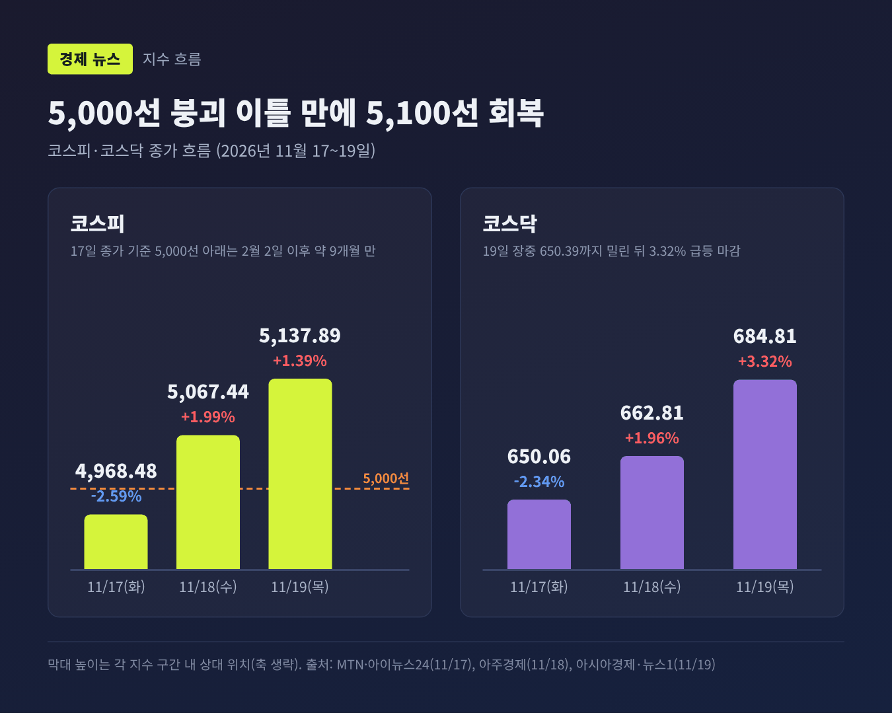
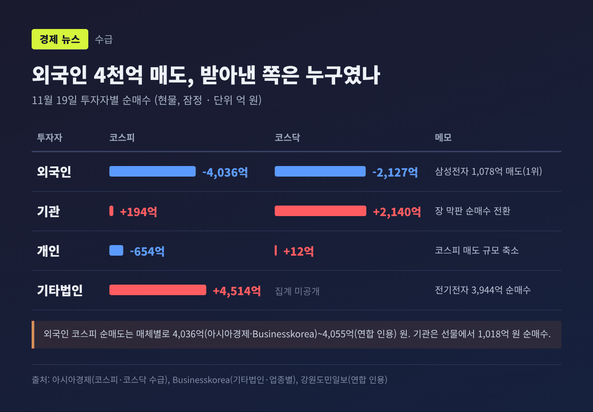
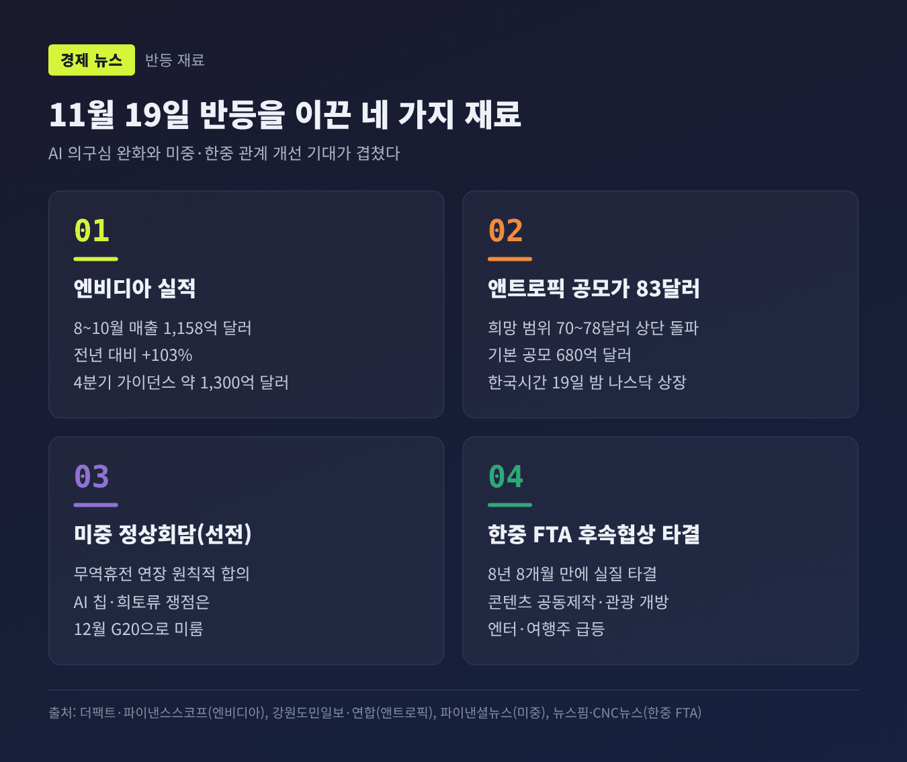
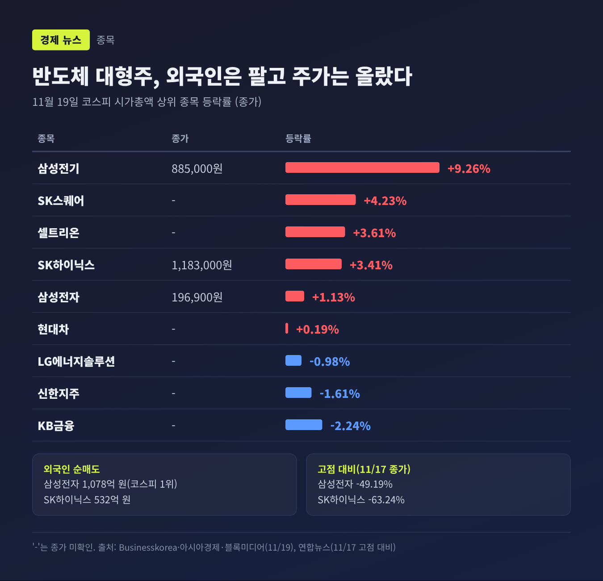
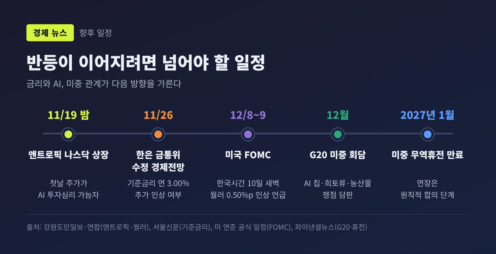

코스피 5,100선 회복, 외국인 4천억 매도에도 1.39% 오른 이유

오늘은 11월 19일 국내 증시가 왜 올랐는지, 그리고 이 반등이 얼마나 단단한지를 정리해 보겠습니다. 코스피는 장중 5,000선 아래까지 밀렸다가 1.39% 오른 5,137.89로 마감했습니다. 외국인이 4천억 원 넘게 팔았는데도 지수가 오른 배경과 다음 주 변수를 차례로 살펴봅니다.
세 줄 요약
- 코스피는 70.45포인트(1.39%) 오른 5,137.89, 코스닥은 22.00포인트(3.32%) 오른 684.81로 마감했습니다.
- 외국인은 코스피에서 약 4,036억~4,055억 원을 순매도했지만, 기관이 장 막판 순매수로 돌아서고 기타법인이 약 4,500억 원을 받아냈습니다.
- 엔비디아 호실적, 앤트로픽 공모가 상향, 미중 무역휴전 연장 원칙 합의, 한중 FTA 후속협상 타결이 재료였습니다. 다음 고비는 11월 26일 금통위와 12월 8~9일 FOMC입니다.
■ 장중 4,963에서 5,137까지, 롤러코스터 같은 하루
이날은 수능일이라 장이 한 시간 늦은 오전 10시에 열렸습니다. 코스피는 0.45% 오른 5,090.04로 출발했지만 곧 밀렸습니다. 오전 10시 26분에는 4,992.84로 5,000선을 내줬고, 장중 저점은 4,963.61까지 내려갔습니다. 전날 종가보다 2% 가까이 빠진 셈입니다.
흐름은 오후에 바뀌었습니다. 반도체 대형주와 수출주에 저가 매수가 들어왔고, 지수는 고점 부근에서 마감했습니다. 코스닥도 장중 650.39까지 밀렸다가 3.32% 오른 684.81, 그날의 최고 수준에서 장을 끝냈습니다.
이 반등은 이틀 전과 이어서 봐야 의미가 드러납니다. 11월 17일 코스피는 2.59% 급락한 4,968.48로 마감했습니다. 종가 기준 5,000선 아래는 2월 2일 이후 약 9개월 만이었습니다. 그날 외국인 순매도는 집계에 따라 1조4,428억~1조4,696억 원에 이르렀습니다.
18일에는 엔비디아 실적에 힘입어 1.99% 오른 5,067.44로 5,000선을 되찾았고, 19일 다시 1.39%를 더했습니다. 이틀 동안 169포인트가량을 회복한 것입니다.

■ 누가 샀나: 기관의 '전환'과 기타법인의 '물량 받기'
수급표를 들여다보면 조금 다른 그림이 보입니다. 대부분의 시황 기사는 "기관 순매수 전환"을 상승 동력으로 꼽았습니다. 틀린 말은 아닙니다. 기관은 장 초반 670억 원가량 팔다가 마감 무렵 194억 원 순매수로 돌아섰습니다.
다만 금액만 보면 기관의 현물 순매수는 크지 않았습니다. 외국인 매도 약 4,036억 원(아시아경제 잠정·Businesskorea 기준, 연합뉴스 인용 보도는 4,055억 원)과 개인 매도 654억 원을 실제로 받아낸 쪽은 기타법인이었습니다. Businesskorea 집계로 기타법인은 4,514억 원을 순매수했습니다. 특히 전기전자 업종에서는 외국인이 2,847억 원, 기관이 1,111억 원을 팔았는데 기타법인이 3,944억 원을 사들였습니다.
기관의 무게는 선물 시장에서 더 뚜렷했습니다. 기관은 선물을 1,018억 원 순매수했고, 외국인은 753억 원을 팔았습니다.
외국인 매도 강도가 누그러진 점도 눈여겨볼 만합니다. 11월 초 외국인은 하루 평균 1조1천억 원가량을 팔았습니다. 이날은 그 절반에도 못 미쳤습니다. 한지영 키움증권 연구원은 외국인 매도 압력이 점차 완화되고 있고 수출과 실적이 시장을 받치고 있다고 진단했습니다.

■ 코스닥 3% 급등, 반도체 장비와 콘텐츠가 이끌었다
코스닥의 힘은 기관에서 나왔습니다. 기관은 코스닥에서 약 2,140억 원을 사들였고, 외국인은 비슷한 규모인 2,127억 원을 팔았습니다(아시아경제 기준, Businesskorea는 기관 2,108억·외국인 2,050억 원으로 집계).
업종별로는 두 갈래가 뚜렷했습니다.
첫째는 반도체 장비·부품입니다. HPSP가 11.76%, 리노공업이 10.56%, 원익IPS가 8.33%, 주성엔지니어링이 6.31% 올랐습니다. 엔비디아 실적이 확인되자 AI 반도체 공급망 전반으로 매수세가 번진 것입니다.
둘째는 콘텐츠와 여행입니다. 스튜디오드래곤이 29.96%, CJ ENM이 28.11% 뛰었고, 코스피의 하이브도 13.15% 올랐습니다. 코스피 오락문화 업종 지수는 9.39% 상승했습니다. 전날 한중 정상회담에서 한중 FTA 서비스·투자 후속협상이 8년 8개월 만에 실질 타결됐다는 소식이 배경입니다.
정책 기대도 깔려 있습니다. 이재명 대통령은 11월 13일 한국거래소 간담회에서 코스닥 개혁과 부실기업 신속 퇴출을 강조했습니다. 그 주 코스닥은 9.5% 올랐고, 기관은 8,100억 원을 순매수했습니다.
그렇다고 낙관만 할 수는 없습니다. 코스닥은 4월 27일 장중 1,229.42에서 11월 6일 629.17까지 거의 반토막이 났습니다. SK증권은 대통령 발언이 아직 원론적이며 "완전한 수요 회복이라고 판단하기에는 이르다"고 평가했습니다.
■ 반등의 재료 네 가지
이날 시장을 움직인 대외 재료는 크게 네 가지로 정리됩니다.
1. 엔비디아 실적. 젠슨 황 전 CEO가 11월 12일 물러난 뒤 처음 낸 실적이었습니다. 8~10월 매출은 1,158억 달러로 1년 전보다 103% 늘었고, 시장 예상(약 1,091억 달러)을 웃돌았습니다. 4분기 매출 가이던스도 약 1,300억 달러로 제시했습니다. 다만 메모리 부품 가격 상승으로 매출총이익률 전망은 3분기 74.9%에서 71~72%로 낮아졌습니다. 메모리 값이 오른다는 것은 SK하이닉스·삼성전자에는 오히려 반가운 신호입니다.
2. 앤트로픽 공모가 상향. 앤트로픽은 공모가를 희망 범위(70~78달러) 상단을 넘는 83달러로 확정했습니다. 연합뉴스 인용 보도에 따르면 기본 공모 680억 달러, 사모 배정을 합치면 940억 달러 규모입니다. 지난 6월 스페이스X(862억 달러) 기록을 넘어섭니다. AI 기업의 수익성 의구심을 덜어줄 재료로 읽혔습니다.
3. 미중 정상회담. 트럼프 대통령과 시진핑 주석은 19일 선전에서 만나 내년 1월 끝나는 무역휴전을 연장하기로 원칙적으로 합의했습니다. AI 칩 수출통제, 희토류, 농산물 구매 같은 민감한 쟁점은 12월 G20 회담으로 넘겼습니다. '큰 합의는 없지만 판도 깨지 않았다'는 정도의 결과입니다.
4. 한중 FTA 후속협상 타결. 방송 프로그램 공동제작 부속서, 영화·온라인게임 최혜국대우, 중국 23개 지역에 설립된 한국 여행사의 중국인 해외여행 모집 허용 등이 담겼습니다. 블록미디어는 이 기대가 실제 공연·관광 수요로 이어질지는 지켜봐야 한다고 짚었습니다.
이 밖에 연간 수출이 1조 달러 고지에 올라섰다는 소식도 호재로 거론됐습니다. 11월 10일까지 누적 수출은 9,636억 달러였고, 정부는 19~20일 달성을 내다봤습니다. 관세청의 공식 확정 집계는 이 글을 쓰는 시점까지 확인하지 못했습니다.

■ 반도체 대형주: 외국인은 팔고, 주가는 올랐다
삼성전자는 1.13% 오른 19만6,900원, SK하이닉스는 3.41% 오른 118만3,000원에 마감했습니다. 흥미로운 점은 외국인이 두 종목을 계속 팔았다는 것입니다. 외국인은 삼성전자를 1,078억 원어치 팔아 코스피 순매도 1위에 올렸고, SK하이닉스도 532억 원 순매도했습니다.
대형주 가운데 가장 강했던 종목은 삼성전기(+9.26%, 88만5,000원)였습니다. SK스퀘어(+4.23%)와 셀트리온(+3.61%)도 힘을 보탰습니다. 반대로 KB금융(-2.24%), 신한지주(-1.61%), LG에너지솔루션(-0.98%)은 내렸습니다. 통신 업종은 3.14% 빠져 업종 가운데 가장 부진했습니다.
거리를 두고 보면 아직 회복의 초입입니다. 연합뉴스 집계로 17일 종가 기준 삼성전자는 연중 고점보다 49.19%, SK하이닉스는 63.24% 낮았습니다. 코스피 자체도 6월 19일 장중 최고치 9,385.59에서 47% 넘게 떨어진 상태였습니다. 예전엔 '9천피'를 이야기했고, 지금은 5,000선을 지키는지가 관심사입니다.

■ 환율은 나흘째 하락, 1,330원
원·달러 환율은 오후 3시 30분 기준 1,330.0원으로 전날보다 3.0원 내렸습니다. 나흘 연속 하락입니다. 미국의 추가 긴축 우려로 달러인덱스는 103.854까지 올라 19개월 만의 고점 부근이었습니다. 그런데도 원화가 강세를 보인 것은 수출업체의 달러 매도 물량 덕분이었습니다.
환율이 안정되면 외국인 입장에서는 환차손 부담이 줄어듭니다. 외국인 매도 강도가 약해진 것과 무관하지 않아 보입니다.
■ 다음 주부터 짚어볼 변수
반등이 이어질지는 금리에 달려 있다고 생각합니다.
11월 26일 금통위와 한은 수정 경제전망. 한국은행 기준금리는 연 3.00%입니다. 7월과 8월 연속 인상한 뒤 10월에는 만장일치로 동결했습니다. 신현송 총재는 올해와 내년 성장률이 8월 전망(3.3%, 2.9%)을 크게 웃돌 것이라고 했습니다. 한국씨티은행은 11월과 내년 2월 각각 0.25%포인트 인상을 예상하고, 성장률 전망이 올해 3.8%, 내년 3.3%로 오를 것으로 봤습니다. 동시에 주가 하락으로 가계의 자본이득이 거의 사라져 민간소비에 하방 위험이 있다고 지적했습니다. 인상이 현실화하면 이미 지친 증시에는 또 하나의 부담이 됩니다.
12월 8~9일 FOMC. 미 연준은 9월 0.25%포인트 올린 뒤 10월에는 동결했습니다. 크리스토퍼 월러 이사는 1월 추가 인상 신호를 시장에 주지 못한다면 12월에 0.50%포인트를 올려야 한다고 말했습니다. 결정은 한국시간 12월 10일 새벽에 나옵니다.
앤트로픽 상장 첫날과 G20. 앤트로픽은 한국시간 19일 밤 나스닥에서 거래를 시작합니다. 첫날 성적은 AI 투자심리의 온도계가 될 것입니다. 하장권 한화투자증권 연구원은 9월 미국 금리 인상 이후 공모 물량을 흡수할 여력이 스페이스X 때보다 약해졌다고 분석했습니다. 12월 G20에서 미중이 AI 칩과 희토류 문제를 어떻게 정리하느냐도 반도체주의 방향을 가를 것입니다.

■ 정리하며
정리하면 이렇습니다. 19일 반등은 외국인이 돌아와서가 아니라, 외국인이 덜 팔고 국내 기관과 기타법인이 그 물량을 받아준 결과였습니다. 엔비디아와 앤트로픽이 AI에 대한 의심을 조금 덜어줬고, 미중·한중 소식이 분위기를 거들었습니다.
아쉬운 점도 분명합니다. 외국인은 여전히 순매도 중이고, 반도체 대형주를 계속 팔고 있습니다. 한국과 미국 모두 금리를 더 올릴 수 있다는 신호를 보내고 있습니다.
'수급이 바뀌어야 추세가 바뀐다'는 오래된 말이 이번에도 기준이 될 것 같습니다. 이 반등을 바닥의 신호로 볼 수 있느냐고 물으신다면, 외국인의 매수 전환과 26일 금통위 결과를 확인한 뒤에 답하는 편이 낫겠다고 말씀드리겠습니다.
이 글은 정보 제공 목적으로 작성되었으며, 특정 종목이나 상품에 대한 투자 권유가 아닙니다. 투자 판단과 그 결과에 대한 책임은 투자자 본인에게 있습니다. 수급 수치는 장 마감 직후 잠정 집계로, 매체에 따라 소폭 차이가 있습니다.
참고 자료
- 아시아경제, 「코스피, 1.39% 오른 5137.89 마감」 (2026-11-19) — https://view.asiae.co.kr/article/2026111916332355935
- 아시아경제, 「코스피, 기관 순매수 전환에 1%대 상승…5130선 마감」 (2026-11-19) — https://view.asiae.co.kr/article/2026111916492474833
- Businesskorea, Korean market close (2026-11-19) — https://www.businesskorea.co.kr/news/articleView.html?idxno=281733
- 뉴스1, 「코스피, 1.39% 상승한 5137.89 마감…코스닥 3.32%↑」 (2026-11-19) — https://www.news1.kr/finance/general-stock/6359886
- 강원도민일보(연합뉴스 인용), 「코스피, 1.39% 오른 5137.89 마감…오늘 밤 앤트로픽 나스닥 입성」 (2026-11-19) — https://www.kado.net/news/articleView.html?idxno=2085949
- 신아일보, 「[마감시황] 코스피, 장중 하락 딛고 5100선 마감」 (2026-11-19) — https://www.shinailbo.co.kr/news/articleView.html?idxno=5085632
- 블록미디어, 「[마감시황] 코스피, 장중 하락 딛고 5100선 회복」 (2026-11-19) — https://www.blockmedia.co.kr/archives/1168055
- MTN, 「젠슨황 여파에 코스피 2.6%↓…5000선 내줘」 (2026-11-17) — https://news.mtn.co.kr/article/2026111716073431251
- 아이뉴스24, 「코스피, 9개월여 만에 '5000피' 붕괴」 (2026-11-17) — https://inews24.com/view/2027260
- 연합뉴스, 「젠슨황·앤트로픽·금리…'삼중고'에 5,000선 무너진 코스피」 (2026-11-17) — https://www.koreancenter.or.kr/news/articleView.html?idxno=1440825
- 아주경제, 「[마감시황] 코스피, 엔비디아 호실적에 5000선 회복」 (2026-11-18) — https://www.ajunews.com/view/20261118155952773
- 더팩트, 엔비디아 젠슨 황 퇴진 후 첫 실적 (2026-11-18) — https://news.tf.co.kr/read/ogmeta/2390125.htm
- 파이낸스스코프, 엔비디아 3분기 실적 (2026-11-18) — https://www.finance-scope.com/article/view/scp202611180001
- 파이낸셜뉴스, 「구체 합의보다 안정적 관리 택한 미중 선전 정상회담」 (2026-11-19) — https://www.fnnews.com/news/202611191627592910
- 뉴스핌, 「한중 FTA 후속협상 8년8개월 만에 실질타결」 (2026-11-18) — https://www.newspim.com/news/view/20261118001245
- CNC뉴스, 한중 FTA 후속협상 개방 내용 (2026-11-19) — https://www.cncnews.co.kr/news/article.html?no=11434
- 세계일보, 「이재명 코스닥 언급에도...증권가 "여전히 원론적 접근"」 (2026-11-16) — https://www.segye.com/newsView/20261116502166
- 데일리안, 「정부는 '3000스닥' 외쳤지만…」 (2026-11-12) — https://www.dailian.co.kr/news/view/1713715
- 서울신문, 「기준금리 일단 3.0% 동결… 새달 '세 번째 인상' 나서나」 (2026-10-23) — https://m.seoul.co.kr/news/newsView.php?id=20261023031006
- 연합뉴스, 「"반도체 가격 상승세 지속…내년 2월까지 0.25%p씩 두 차례 인상"」 (2026-11-06) — https://www.koreancenter.or.kr/news/articleView.html?idxno=1435952
- 연합뉴스, 「반도체 수출 4배로 껑충…'1조 달러' 곧 달성 전망」 (2026-11-11) — https://www.koreancenter.or.kr/news/articleView.html?idxno=1437665
- 미국 연방준비제도, December 2026 일정 — https://www.federalreserve.gov/newsevents/2026-december.htm